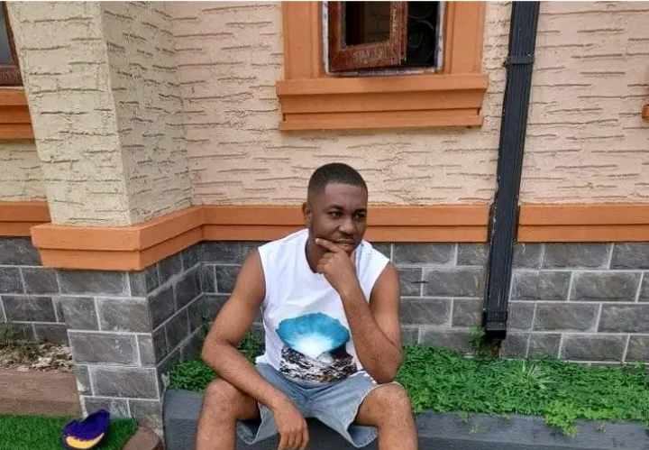

Junior Full-Stack Developer & Information Technology Graduate (FUTO)
Specialized in building responsive web applications, modular RESTful APIs, and robust backend architectures.
View My WorkDriven and detail-oriented Junior Full-Stack Developer and Information Technology graduate skilled in building end-to-end web applications using React, Angular, Node.js, Express.js, and MongoDB. Experienced in designing responsive user interfaces, architecting modular RESTful APIs with TypeScript and Object-Oriented Programming (OOP) principles, and managing NoSQL databases.
Possesses a solid foundation in network protocols (HTTP/HTTPS, TCP/IP) and modern software development workflows. A fast learner eager to expand technical expertise, adapt to emerging frameworks, and contribute effectively within a collaborative engineering team.
React, Angular, JavaScript (ES6+), TypeScript, HTML5, CSS3, Responsive Web Design, Component Architecture, State Management
Node.js, Express.js, RESTful API Architecture, Asynchronous Programming, OOP Principles, Middleware Design
MongoDB, Mongoose ORM, Data Modeling, Git, GitHub, Postman, Networking Fundamentals (HTTP/HTTPS, TCP/IP)
React, Node.js, Express.js, TypeScript, MongoDB
Architected and deployed a full-stack SPA enabling students to track academic records, compute cumulative GPAs, and view degree classifications in real time with robust backend API validation and error handling.
Angular, TypeScript, REST APIs
Designed a client-side management dashboard using Angular and TypeScript, leveraging Angular Services for efficient data fetching, reactive forms, and real-time task status updates.
Moments from my journey, tech sessions, and friends.
Defence Day With Buzz Brain
FUTO Campus Days
Relaxing After Lectures
At Wedding To Cover Event

At The Lodge
Lagos, Nigeria | +234 706 208 7975 | Corneliusnkwocha5@gmail.com
GitHub: github.com/cornel102